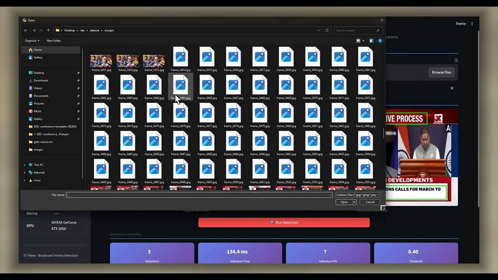
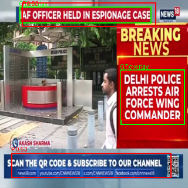

An ultra-lightweight, real-time deep learning pipeline based on SSDLite320 with MobileNetV3-Large. Designed to detect, localize, and bound critical text overlays, lower-thirds, headline banners, and ticker graphics on broadcast video streams at 30+ FPS on CPU.
Watch the comprehensive project demonstration explaining the engineering motivation, mathematical loss formulation, anchor adaptation experiments, and Streamlit demo application.
This recording details the entire lifecycle: scraping & annotating broadcast news frames in COCO format, training both the Baseline and Dataset-Adapted SSDLite models with PyTorch, analyzing the 0.7477 mIoU scores, and running inference through the FastAPI backend and Streamlit user interface.

Extracted HD ThumbnailDirect video link: youtu.be/3WrecZwehT8
A high-throughput, low-latency pipeline designed for continuous real-time broadcast media frame analysis, multi-scale feature representation, and accurate spatial box localization.
flowchart LR
subgraph INP["1. Video Ingestion"]
V["Broadcast Video Stream / File"] --> F["Frame Extractor (cv2)"]
F --> R["Resize & Normalize (320x320)"]
end
subgraph BB["2. MobileNetV3-Large Backbone"]
R --> C1["Initial Conv2d + Hard-Swish"]
C1 --> IR["Inverted Residual Blocks + SE Attention"]
IR --> P1["Feature Map 1 (19x19)"]
IR --> P2["Feature Map 2 (10x10)"]
IR --> P3["Feature Map 3 (5x5)"]
IR --> P4["Feature Map 4 (3x3)"]
IR --> P5["Feature Map 5 (2x2)"]
IR --> P6["Feature Map 6 (1x1)"]
end
subgraph HD["3. SSDLite Detection Head"]
P1 & P2 & P3 & P4 & P5 & P6 --> DW["Depthwise-Separable Convolutions"]
DW --> CLS["Classification Head (2 Classes)"]
DW --> REG["Regression Head (4 Coordinates)"]
end
subgraph ANCH["4. Anchor Generation Strategy"]
CLS & REG --> M1["Model A: Default COCO Anchors [2, 3]"]
CLS & REG --> M2["Model B: Adapted Wide Anchors [2, 3, 5, 8]"]
end
subgraph PP["5. Post-Processing & NMS"]
M1 & M2 --> NMS["Non-Maximum Suppression (IoU >= 0.50)"]
NMS --> CLAMP["Boundary Clamping & Denormalization"]
end
subgraph APP["6. Deployment Layer"]
CLAMP --> FAST["FastAPI Inference Server (Port 5000)"]
FAST --> ST["Streamlit UI (Port 8501)"]
end
style INP fill:#111827,stroke:#6366f1,stroke-width:1.5px,color:#fff
style BB fill:#0f172a,stroke:#8b5cf6,stroke-width:1.5px,color:#fff
style HD fill:#111827,stroke:#06b6d4,stroke-width:1.5px,color:#fff
style ANCH fill:#0f172a,stroke:#ec4899,stroke-width:1.5px,color:#fff
style PP fill:#111827,stroke:#10b981,stroke-width:1.5px,color:#fff
style APP fill:#0f172a,stroke:#f59e0b,stroke-width:1.5px,color:#fff
Leverages inverted residual bottlenecks, Hard-Swish non-linearities, and Squeeze-and-Excitation (SE) attention to extract deep semantic features with minimal floating-point operations (0.427 GFLOPs).
Replaces standard $3\times3$ convolutions with depthwise separable layers, drastically shrinking parameters to 2.21M while detecting rectangular overlays across 6 pyramid scales ($19\times19$ to $1\times1$).
Because broadcast news banners and tickers are predominantly wide rectangles, Model B adapts anchor aspect ratios to $[2, 3, 5, 8]$ across all 6 pyramid layers to optimize prior spatial coverage.
A high-concurrency FastAPI microservice serves PyTorch inference endpoints, paired with an interactive Streamlit frontend for drag-and-drop video/frame overlay detection and IoU analysis.
Exact mathematical specifications governing bounding box regression, multi-task training loss, anchor box parameterization, and spatial overlap metrics.
Computes the ratio of overlap between predicted bounding box $B_{\text{pred}} = (x_1^p, y_1^p, x_2^p, y_2^p)$ and ground-truth box $B_{\text{gt}} = (x_1^g, y_1^g, x_2^g, y_2^g)$, where intersection coordinates are given by:
$N$ is the number of matched default boxes. If $N=0$, loss is set to 0. The weighting factor is set to $\alpha = 1$. The classification term $\mathcal{L}_{\text{conf}}$ utilizes Cross-Entropy over positive and hard-mined negative anchors (3:1 ratio):
Mitigates exploding gradients on large coordinate discrepancies during initial training epochs:
For each feature map scale $k \in \{1, \dots, 6\}$, default anchor scale is governed by:
Inspect key functional modules implemented in PyTorch, TorchVision, and Streamlit—from vectorized IoU calculation to dataset-adapted anchor generation.
def compute_iou(box1: torch.Tensor, box2: torch.Tensor) -> torch.Tensor:
"""
Vectorized Intersection over Union (IoU) computation between two sets of bounding boxes.
Args:
box1: Tensor of shape (N, 4) in [x1, y1, x2, y2] format
box2: Tensor of shape (M, 4) in [x1, y1, x2, y2] format
Returns:
Tensor of shape (N, M) containing pairwise IoU values in range [0.0, 1.0]
"""
# Compute intersection rectangle boundaries via broadcasting
x1 = torch.max(box1[:, None, 0], box2[None, :, 0])
y1 = torch.max(box1[:, None, 1], box2[None, :, 1])
x2 = torch.min(box1[:, None, 2], box2[None, :, 2])
y2 = torch.min(box1[:, None, 3], box2[None, :, 3])
# Compute intersection area (clamped at 0 to avoid negative overlaps)
inter = (x2 - x1).clamp(min=0) * (y2 - y1).clamp(min=0)
# Compute individual bounding box areas
area1 = (box1[:, 2] - box1[:, 0]) * (box1[:, 3] - box1[:, 1])
area2 = (box2[:, 2] - box2[:, 0]) * (box2[:, 3] - box2[:, 1])
# Compute union: Area(A) + Area(B) - Intersection(A, B)
union = area1[:, None] + area2[None, :] - inter
# Avoid zero division with epsilon 1e-6
return inter / (union + 1e-6)from torchvision.models.detection.anchor_utils import DefaultBoxGenerator
# In news broadcasts, textual overlays and lower-thirds are predominantly
# elongated horizontal rectangles spanning 50% to 95% of the screen width.
# We modify default square-heavy anchors with wide aspect ratios [2, 3, 5, 8].
custom_anchor_gen = DefaultBoxGenerator(
aspect_ratios=[[2, 3, 5, 8]] * 6, # Applied across all 6 feature pyramid scales
min_ratio=20, # Smallest scale covers 20% of image height
max_ratio=95 # Largest scale covers 95% of image width
)
# Attach generator to SSDLite320 model
model_adapted.anchor_generator = custom_anchor_gen
num_anchors = custom_anchor_gen.num_anchors_per_location()
print(f"Generated anchors per location across 6 layers: {num_anchors}")from functools import partial
import torch.nn as nn
from torchvision.models.detection import ssdlite320_mobilenet_v3_large
from torchvision.models.detection.ssdlite import SSDLiteHead
def create_adapted_ssdlite(num_classes: int = 2):
"""
Initializes SSDLite320 with MobileNetV3-Large and adapts the prediction
head channels to match custom anchor configurations.
"""
model = ssdlite320_mobilenet_v3_large(num_classes=num_classes, weights=None)
# Extract input channel depths from classification head module list
in_channels = [c[0][0].in_channels for c in model.head.classification_head.module_list]
norm_layer = partial(nn.BatchNorm2d, eps=0.001, momentum=0.03)
# Re-instantiate SSDLiteHead with custom number of anchors (10 per cell)
model.head = SSDLiteHead(
in_channels=in_channels,
num_anchors=custom_anchor_gen.num_anchors_per_location(),
num_classes=num_classes,
norm_layer=norm_layer
)
return model# Temporal-grouped splitting prevents adjacent video frames from leaking
# across train, validation, and test splits.
frame_numbers = []
for img in coco["images"]:
match = re.search(r"frame_(\d+)", img["file_name"])
if match:
frame_numbers.append((int(match.group(1)), img))
frame_numbers.sort(key=lambda x: x[0])
groups = []
if frame_numbers:
current_group = [frame_numbers[0]]
for i in range(1, len(frame_numbers)):
prev_num = frame_numbers[i-1][0]
curr_num = frame_numbers[i][0]
if curr_num - prev_num > 5:
groups.append(current_group)
current_group = [frame_numbers[i]]
else:
current_group.append(frame_numbers[i])
groups.append(current_group)
# Splits: Train: Groups 0-28 (202 imgs), Val: Groups 29-33 (36 imgs), Test: Groups 34-40 (21 imgs)from fastapi import FastAPI, UploadFile, File
import torch
from PIL import Image
import io
app = FastAPI(title="Broadcast Overlay Detection API")
@app.post("/predict")
async def predict_frame(file: UploadFile = File(...), conf_threshold: float = 0.3):
contents = await file.read()
image = Image.open(io.BytesIO(contents)).convert("RGB")
tensor = transform(image).unsqueeze(0).to(device)
with torch.no_grad():
predictions = model(tensor)[0]
# Filter by confidence threshold and text overlay label (class 1)
mask = (predictions["scores"] >= conf_threshold) & (predictions["labels"] == 1)
return {
"boxes": predictions["boxes"][mask].tolist(),
"scores": predictions["scores"][mask].tolist()
}Detailed metrics evaluated on held-out test frames using strict temporal grouping to prevent data leakage.
| Evaluation Metric | Model A (Baseline SSDLite320) | Model B (Dataset-Adapted Wide Anchors) | Advantage / Observation |
|---|---|---|---|
| Mean IoU (mIoU) | 0.7477 (74.77%) | 0.6899 (68.99%) | Baseline achieves superior tight bounding overlap |
| Precision | 0.8857 (88.57%) | 0.2647 (26.47%) | Baseline prevents false-positive hallucinations |
| Recall | 0.9688 (96.88%) | 0.2812 (28.12%) | Baseline catches 31 out of 32 test overlays |
| F1-Score | 0.9254 | 0.2727 | High harmonic mean between precision and recall |
| mAP @ 0.50 | 0.9688 | 0.2812 | Outstanding localization at 0.50 threshold |
| mAP @ 0.50:0.95 | 0.5104 | 0.1061 | Consistent performance under strict thresholds |
| Compute Complexity | 0.427 GFLOPs | 0.435 GFLOPs | Sub-0.5 GFLOP footprint enables mobile/CPU inference |
| Inference Speed (FPS) | 30.6 FPS (32.69 ms) | 34.5 FPS (29.00 ms) | Both models achieve full real-time 30+ FPS speed |
Simulate Intersection-over-Union threshold requirements for broadcast overlay localization.
Actual bounding box predictions (Green: Ground Truth, Red/Orange: Predicted Model Overlays)

Run the model training or start the interactive application in under two minutes.
Install PyTorch and project dependencies
Train Model A and evaluate test split mIoU
Start FastAPI backend & Streamlit UI